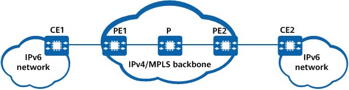

This function is not supported by the following: By default, BGP IPv6 unicast routes can recurse to outbound interfaces and next hops, but not to LDP LSPs. A device can be enabled to recurse BGP IPv6 unicast routes to LDP LSPs.
Prerequisites
Before enabling the device to recurse BGP IPv6 unicast routes to LDP LSPs, complete the following tasks:
Configure an IGP.
Establish an LDP LSP between PE1 and PE2.
Establish an IBGP peer relationship between PE1 and PE2 using loopback interfaces, and establish a BGP IPv4 peer relationship between PE1 and PE2 in the IPv6 unicast address family view.
Context
On the IPv4/MPLS backbone network shown in Figure 1, PE1, P and PE2 run an IGP for interworking, an LDP LSP is established between PE1 and PE2. CE1 and CE2, each on an IPv6 network, establish a public network IPv6 EBGP peer relationship with PE1 and PE2, respectively. To allow PE1 and PE2 to exchange BGP IPv6 unicast routes, an IBGP peer relationship is established between PE1 and PE2 using loopback interfaces, and a BGP IPv4 peer relationship is established between PE1 and PE2 in the IPv6 unicast address family. CE1 sends an IPv6 route to PE1 through the EBGP peer connection. Upon receipt of the route, PE1 changes the next-hop IP address of the route to a local IP address and sends the route to PE2 through the IBGP peer connection. After PE2 learns the IPv6 route, it can recurse the route only to an outbound interface and next hop by default. However, PE2 can be enabled to recurse BGP IPv6 unicast routes to LDP LSPs.
Figure 1 Scenario where BGP IPv6 unicast routes recurse to LDP LSPs
The route transmission process is as follows:
- CE2 sends an intra-AS IPv6 route to PE2, its EBGP peer.
- Upon receipt of the IPv6 route from CE2, PE2 changes the next hop of the route to itself and then sends the route to PE1, its IBGP peer.
- Upon receipt of the IPv6 route from PE2, PE1 recurses the route to a tunnel and delivers information about the route to the forwarding table. PE1 then changes the next hop of the route to itself and sends the route to CE1, its EBGP peer.
In this manner, the IPv6 route is transmitted from CE2 to CE1.
The specific packet forwarding process is as follows:
- CE1 sends an IPv6 packet to PE1 over a public network IPv6 link.
- After receiving the IPv6 packet from CE1, PE1 searches its forwarding table based on the destination address of the packet and encapsulates an LDP LSP label into the packet. PE1 then sends the IPv6 packet to PE2 over a public network tunnel.
- Upon receipt of the IPv6 packet, PE2 removes the label and forwards the packet to CE2 over an IPv6 link based on the destination address of the packet.
In this way, the IPv6 packet is transmitted from CE1 to CE2.
Procedure
- Enter the system view.
system-view
- Enter the BGP view.
bgp as-number
- Enter the IPv6 unicast address family view.
ipv6-family unicast
- Enable the device to recurse BGP IPv6 unicast routes to LDP LSPs.
unicast-route recursive-lookup tunnel-v4 [ tunnel-selector tunnel-selector-name ]
Verifying the Configuration
After the device is enabled to recurse BGP IPv6 unicast routes to LDP LSPs, you can run the display bgp ipv6 routing-table ipv6-address command to view information about such route recursion.